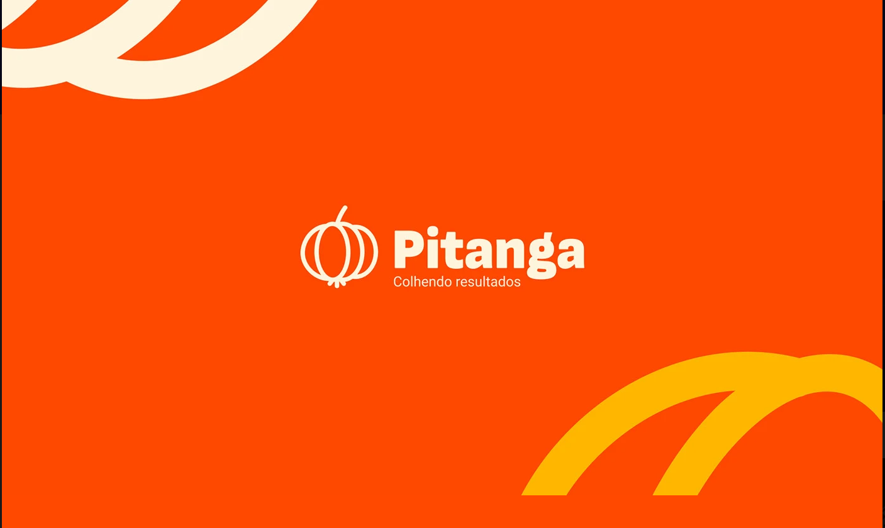
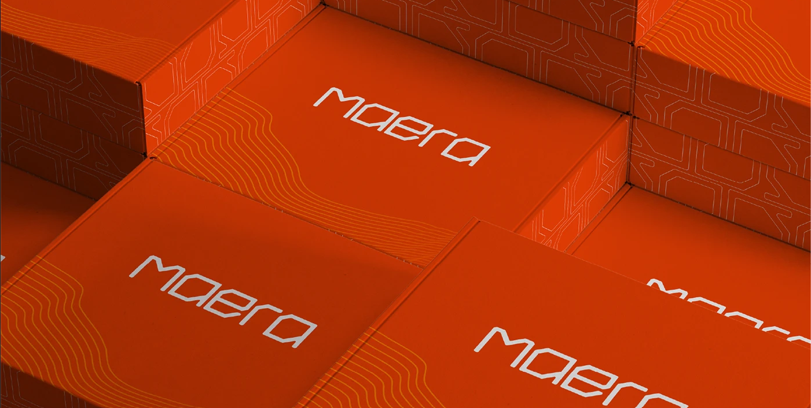
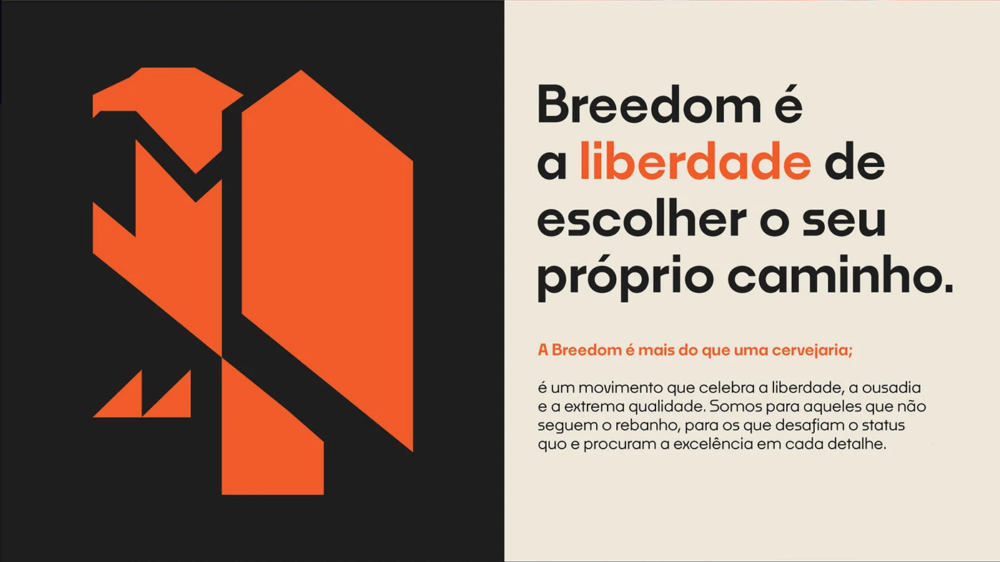
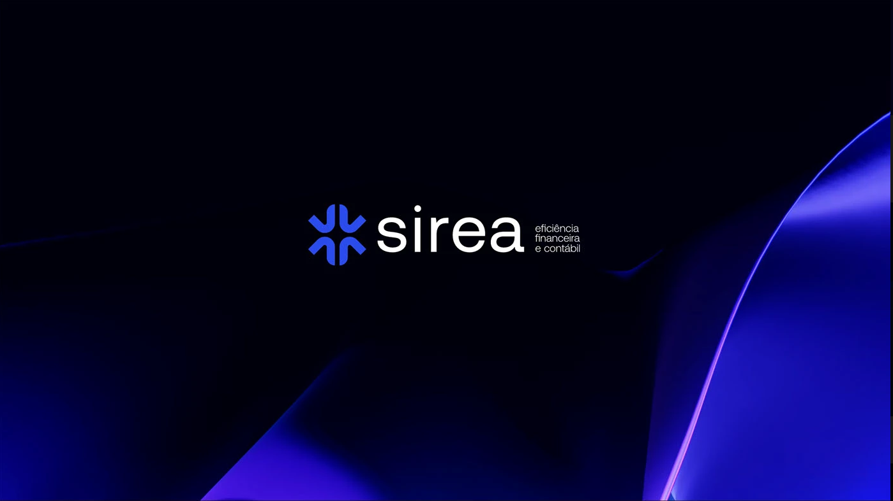
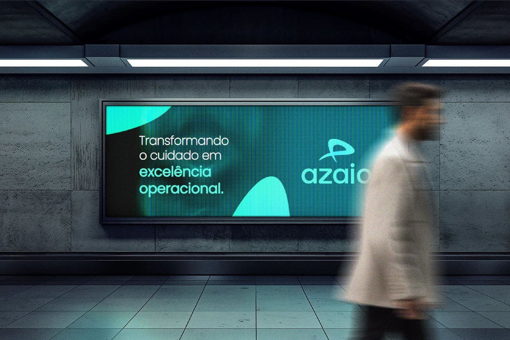
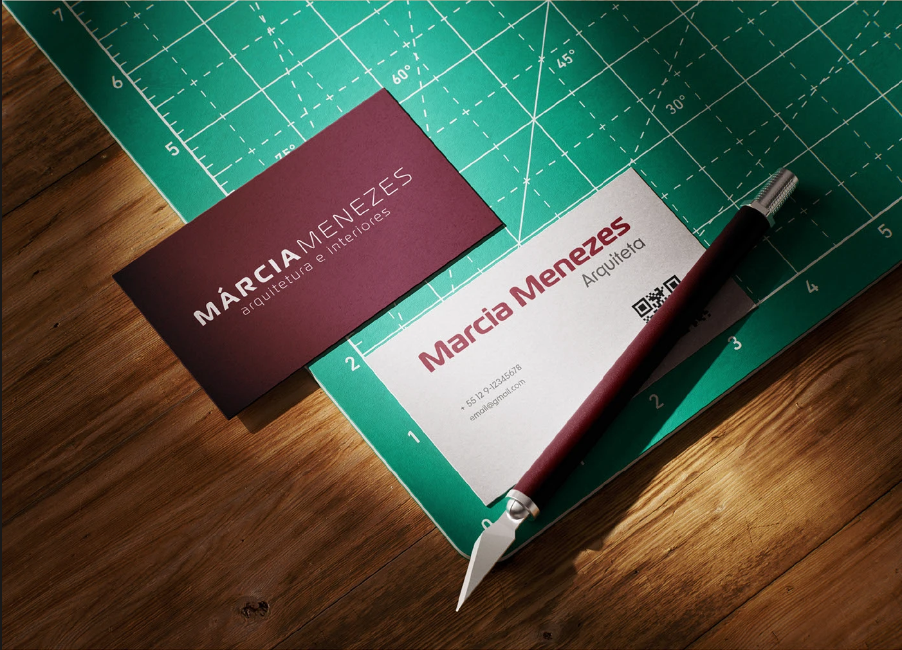
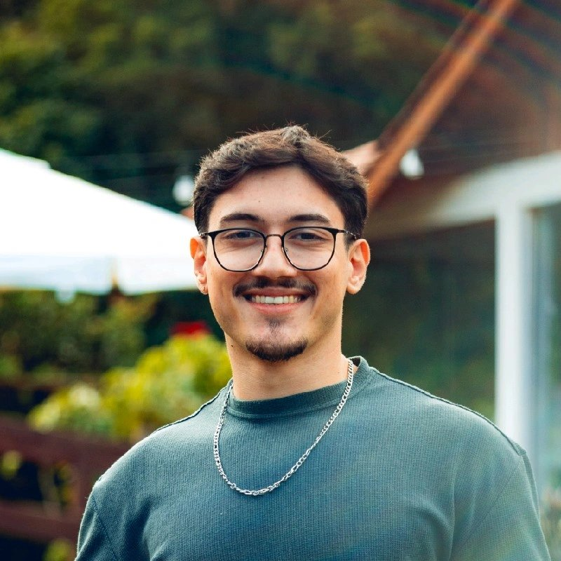

Comecei pelo branding — construindo sistemas de identidade visual com personalidade e consistência. Com o tempo, fui me aproximando de produto: pesquisa com usuários, arquitetura de informação, prototipagem e decisões que impactam negócio.
Hoje atuo na interseção entre as duas disciplinas. Entendo marca como experiência e produto como comunicação — o que me permite colaborar com times de design, produto e estratégia sem perder a visão do todo.
Experiência em B2B SaaS e e-commerce, com atuação em projetos end-to-end: do discovery ao handoff. Disponível para freelance e oportunidades.
4+ anos construindo experiências digitais e identidades visuais em ambientes de produto e agências.